从零开始的IDA¶
对于re手来说，最基础和最重要的工具就是我们的 老婆 IDA 了。
IDA Pro（Interactive Disassembler Professional）简称“IDA”，是Hex-Rays公司出品的一款交互式反汇编工具，是目前最棒的静态反编译软件 之一 。
请注意你的IDA Pro版本……
在目前最新版本的IDA Pro中，我们会注意到一个全新的IDA替代了以前的IDA+IDA64。
根据Hex-Rays的发行公告，IDA Pro已经在8.3版本中弃用了IDA(32-bit)，并在9.0版本中正式将两个IDA可执行程序合并为一个。
这并不意味着我们从此不再能反编译32-bit/64-bit程序了，相反，现在的IDA Pro已经同时兼容了这两个版本！
“我们在几个版本前就弃用了IDA32。在IDA 9.0中，只需一个IDA二进制即可处理32位和64位代码。”
“将遗留IDB转换为I64文件格式是透明的，由IDA自动执行。”
IDA界面¶
随意用IDA打开一个文件，我们可以看到主界面：
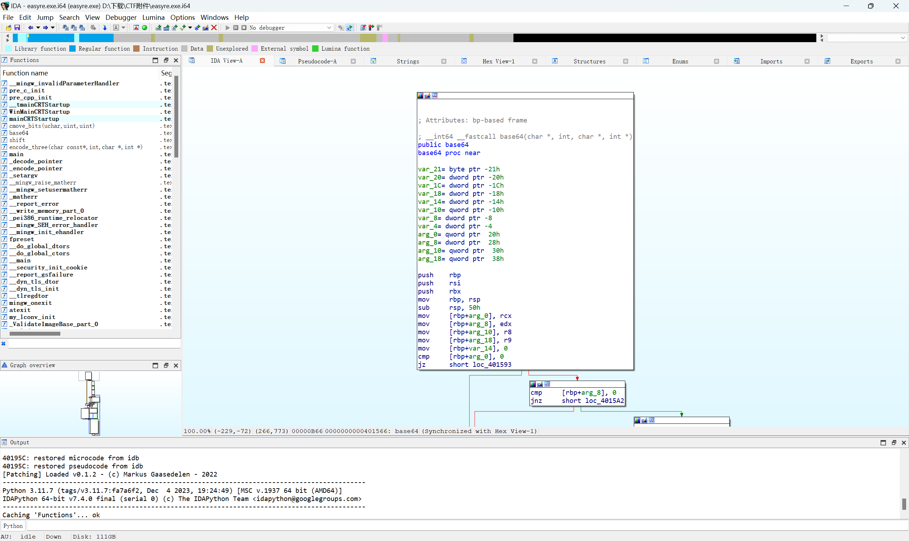
Function¶
左边的Function视窗，我们可以看到程序内识别出的所有函数。 Ctrl+F还可以搜索我们想找的函数：
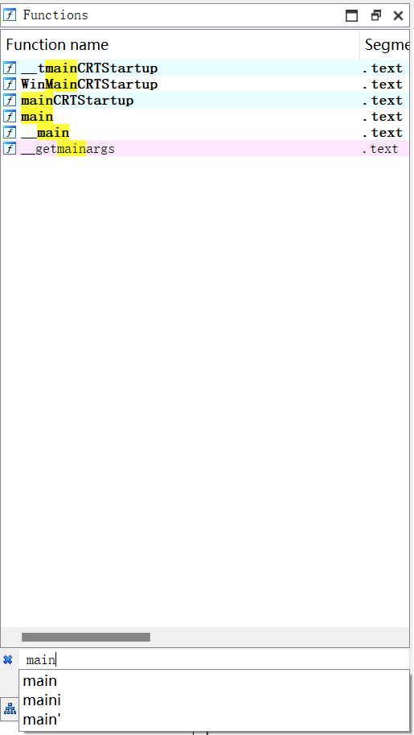
IDA View-A¶
右侧IDA View-A我们可以看到反汇编得到的汇编代码，以及控制流。
按空格键可以切换 “平铺” 和 “控制流” 两种模式。
平铺模式可以让我们看到所有代码在内存中保存的位置、顺序。
控制流模式可以让我们清晰地看到程序控制流的变化。
IDA View-A下的其他快捷键：
- G：指定地址跳转
- P：解析函数
- C：将数据转化为代码
- D：将代码转化为数据
- Shift+E：提取数据
在IDA View-A视窗下按Tab或F5就可以自动将汇编代码翻译成 伪C语言代码 。（也就是传说中的 “万能F5” ）
伪C代码可以近似当做C语言代码阅读，只是有些地方语法不一定准确，也会受到源程序编码语言的影响 （如Rust语言反编译出的依托答辩）
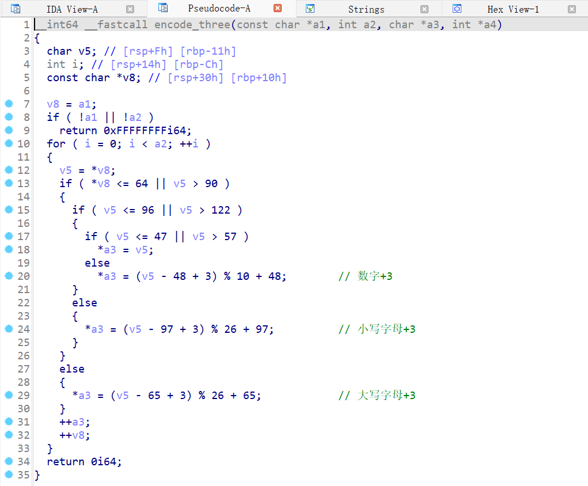
Pseudocode-A¶
Pseudocode-A视窗下的快捷键：
/：添加注释\：隐藏类型描述Y：更改变量类型R：将选中的数字转换为相应的ASCII字符X：查看函数的交叉引用N：更改变量名称
String¶
除此之外，我们还可以通过String界面查看程序中所有的字符串：
Shift+F12：打开String界面，查看字符串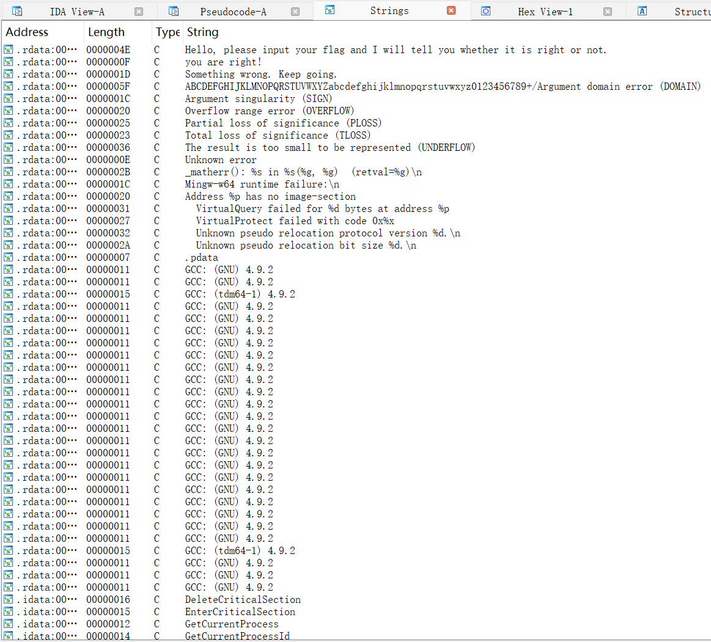
至此，你就大致掌握了逆向工程最基础的逆向分析工具！
这就结束了吗……？¶
别急，IDA并不只是我们上面介绍的这么简单zwz~
现在的IDA可以完成更多有趣的工作，比如下面这些：
patch¶
我们以一个题目为例(点击下载附件)：
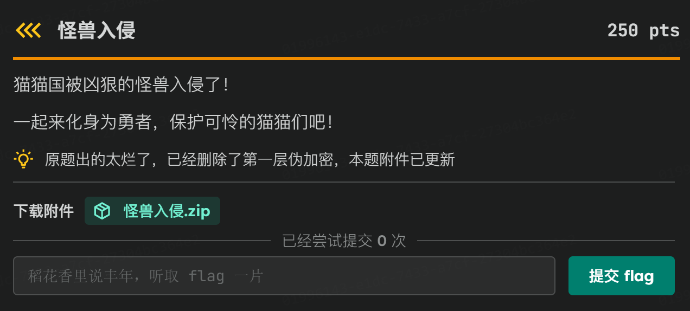
本题下发了一个小游戏，需要你不断输入attack使怪兽的血量清零：
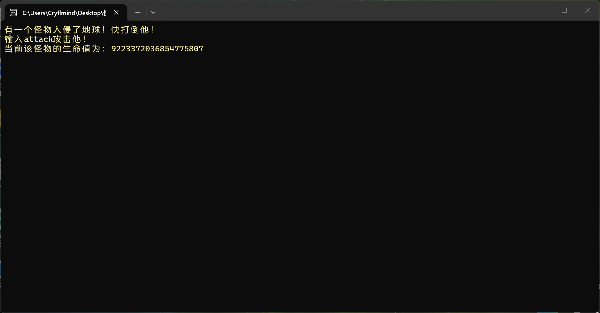
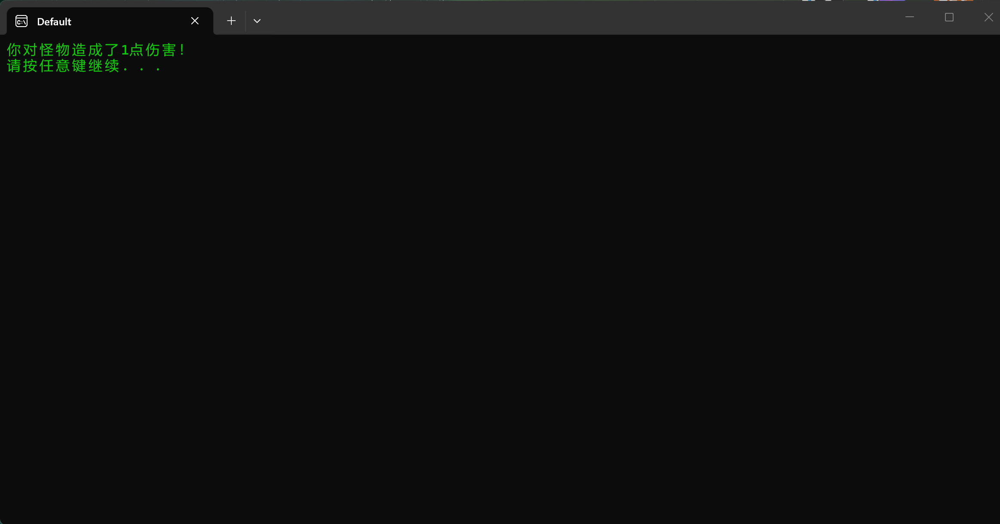
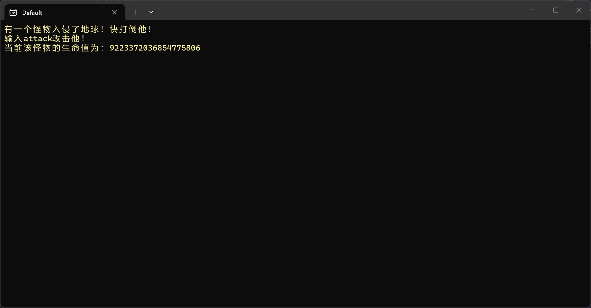
危险操作
请注意，在逆向工程中接触的文件可能是有病毒的！
所以一个比较保险的做法是先进行静态分析和云沙箱分析，确保万无一失之后再尝试在虚拟机中运行。
目前笔者见过的案例包括但不限于有选手的电脑/服务器被挂上挖矿程序被迫挖矿、文件都被病毒加密等等……
逆向千万条，安全第一条，操作不规范，机器两行泪喵~
首先可以把可执行程序丢入DIE分析一下：
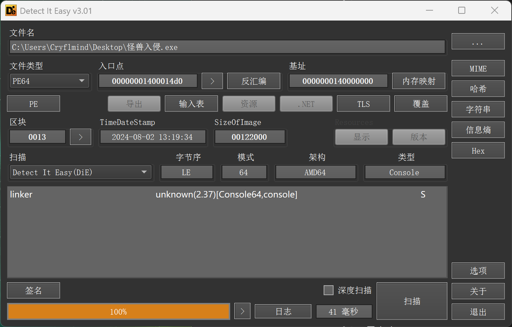
可以看到是64位的Windows程序（PE64），如果你是旧版本(<9.0)的IDA，需要拖给IDA64进行分析，否则直接拖给IDA分析就行了（笔者这里是IDA Pro 9.3，直接拖过去分析即可）：
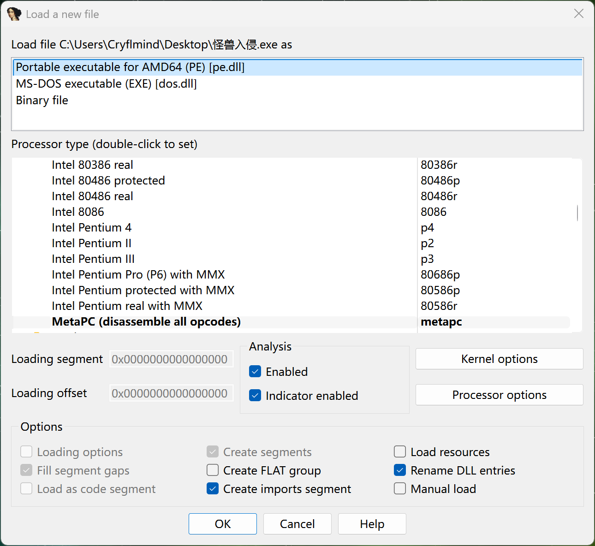
等待加载完成，我们就会看到反汇编的控制流视图：
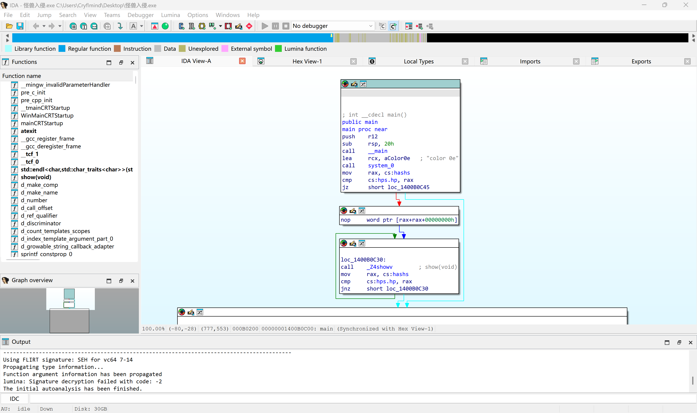
可以看到 IDA 已经找到 main 函数。此时可以按下 F5（刷新反编译结果）或 Tab（切换到当前指令处的反编译结果），查看对应的伪 C 代码：
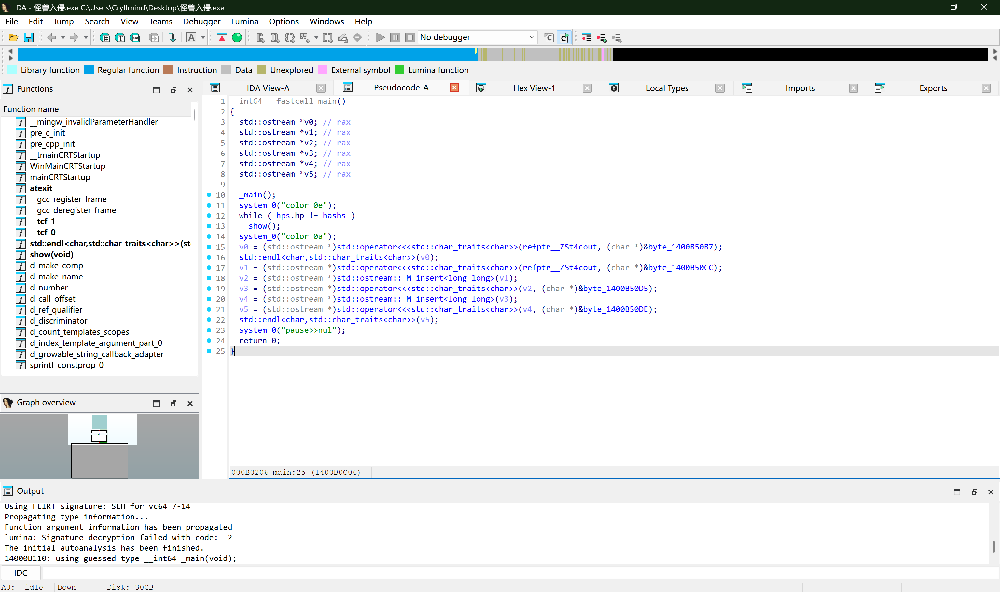
__int64 __fastcall main()
{
std::ostream *v0; // rax
std::ostream *v1; // rax
std::ostream *v2; // rax
std::ostream *v3; // rax
std::ostream *v4; // rax
std::ostream *v5; // rax
_main();
system_0("color 0e");
while ( hps.hp != hashs )
show();
system_0("color 0a");
v0 = (std::ostream *)std::operator<<<std::char_traits<char>>(refptr__ZSt4cout, (char *)&byte_1400B50B7);
std::endl<char,std::char_traits<char>>(v0);
v1 = (std::ostream *)std::operator<<<std::char_traits<char>>(refptr__ZSt4cout, (char *)&byte_1400B50CC);
v2 = (std::ostream *)std::ostream::_M_insert<long long>(v1);
v3 = (std::ostream *)std::operator<<<std::char_traits<char>>(v2, (char *)&byte_1400B50D5);
v4 = (std::ostream *)std::ostream::_M_insert<long long>(v3);
v5 = (std::ostream *)std::operator<<<std::char_traits<char>>(v4, (char *)&byte_1400B50DE);
std::endl<char,std::char_traits<char>>(v5);
system_0("pause>>nul");
return 0;
}
看起来这是一个C++或者类似语言编写的小游戏，不妨双击show()函数查看内容：
void __cdecl show()
{
__int64 v0; // rax
const std::ctype<char> *v1; // r13
char v2; // dl
std::ostream *v3; // rax
__int64 v4; // rax
const std::ctype<char> *v5; // r13
char v6; // dl
std::ostream *v7; // rax
std::ostream *v8; // r13
__int64 v9; // rax
const std::ctype<char> *v10; // r14
char v11; // dl
std::ostream *v12; // rax
__int64 v13; // rax
const std::ctype<char> *v14; // r14
char v15; // dl
std::ostream *v16; // rax
std::ctype<char>::char_type (__fastcall *v17)(const std::ctype<char> *const, char); // rax
std::ctype<char>::char_type (__fastcall *v18)(const std::ctype<char> *const, char); // rax
std::ctype<char>::char_type (__fastcall *v19)(const std::ctype<char> *const, char); // rax
std::ctype<char>::char_type (__fastcall *v20)(const std::ctype<char> *const, char); // rax
std::__ostream_insert<char,std::char_traits<char>>(refptr__ZSt4cout);
v0 = *(_QWORD *)(*(_QWORD *)refptr__ZSt4cout - 24LL);
v1 = *(const std::ctype<char> **)((char *)refptr__ZSt4cout + v0 + 240);
if ( !v1 )
goto LABEL_25;
if ( *((_BYTE *)v1 + 56) )
{
v2 = *((_BYTE *)v1 + 67);
}
else
{
std::ctype<char>::_M_widen_init(*(_QWORD *)((char *)refptr__ZSt4cout + v0 + 240));
v2 = 10;
v17 = *(std::ctype<char>::char_type (__fastcall **)(const std::ctype<char> *const, char))(*(_QWORD *)v1 + 48LL);
if ( v17 != std::ctype<char>::do_widen )
v2 = v17(v1, 10);
}
v3 = (std::ostream *)std::ostream::put(refptr__ZSt4cout, v2);
std::ostream::flush(v3);
std::__ostream_insert<char,std::char_traits<char>>(refptr__ZSt4cout);
v4 = *(_QWORD *)(*(_QWORD *)refptr__ZSt4cout - 24LL);
v5 = *(const std::ctype<char> **)((char *)refptr__ZSt4cout + v4 + 240);
if ( !v5 )
goto LABEL_25;
if ( *((_BYTE *)v5 + 56) )
{
v6 = *((_BYTE *)v5 + 67);
}
else
{
std::ctype<char>::_M_widen_init(*(_QWORD *)((char *)refptr__ZSt4cout + v4 + 240));
v6 = 10;
v18 = *(std::ctype<char>::char_type (__fastcall **)(const std::ctype<char> *const, char))(*(_QWORD *)v5 + 48LL);
if ( v18 != std::ctype<char>::do_widen )
v6 = v18(v5, 10);
}
v7 = (std::ostream *)std::ostream::put(refptr__ZSt4cout, v6);
std::ostream::flush(v7);
std::__ostream_insert<char,std::char_traits<char>>(refptr__ZSt4cout);
v8 = (std::ostream *)std::ostream::_M_insert<long long>(refptr__ZSt4cout);
v9 = *(_QWORD *)(*(_QWORD *)v8 - 24LL);
v10 = *(const std::ctype<char> **)((char *)v8 + v9 + 240);
if ( !v10 )
goto LABEL_25;
if ( *((_BYTE *)v10 + 56) )
{
v11 = *((_BYTE *)v10 + 67);
}
else
{
std::ctype<char>::_M_widen_init(*(_QWORD *)((char *)v8 + v9 + 240));
v11 = 10;
v19 = *(std::ctype<char>::char_type (__fastcall **)(const std::ctype<char> *const, char))(*(_QWORD *)v10 + 48LL);
if ( v19 != std::ctype<char>::do_widen )
v11 = v19(v10, 10);
}
v12 = (std::ostream *)std::ostream::put(v8, v11);
std::ostream::flush(v12);
std::operator>><char>(refptr__ZSt3cin);
if ( !(unsigned int)std::string::compare(&ans[abi:cxx11], "attack") )
{
system_0("cls");
hps.hp = hashs ^ ((hashs ^ hps.hp) - 1);
system_0("color 0a");
}
else
{
system_0("cls");
system_0("color 0c");
}
std::__ostream_insert<char,std::char_traits<char>>(refptr__ZSt4cout);
v13 = *(_QWORD *)(*(_QWORD *)refptr__ZSt4cout - 24LL);
v14 = *(const std::ctype<char> **)((char *)refptr__ZSt4cout + v13 + 240);
if ( !v14 )
LABEL_25:
std::__throw_bad_cast();
if ( *((_BYTE *)v14 + 56) )
{
v15 = *((_BYTE *)v14 + 67);
}
else
{
std::ctype<char>::_M_widen_init(*(_QWORD *)((char *)refptr__ZSt4cout + v13 + 240));
v15 = 10;
v20 = *(std::ctype<char>::char_type (__fastcall **)(const std::ctype<char> *const, char))(*(_QWORD *)v14 + 48LL);
if ( v20 != std::ctype<char>::do_widen )
v15 = v20(v14, 10);
}
v16 = (std::ostream *)std::ostream::put(refptr__ZSt4cout, v15);
std::ostream::flush(v16);
system_0("pause");
system_0("color 0e");
system_0("cls");
}
代码太长了？不要慌~
很多人在初学RE的时候，看着长篇大论的代码就有些发憷。
但其实完全没有这个必要哦~逆向工程并不是要求你能完整阅读所有的代码，你只要能读懂你感兴趣的那部分就好啦~
就比如这题我们直接阅读的是show()的逻辑，而不是先去研究比如std::ostream::_M_insert是什么~
耐心仔细读读吧，多去了解一些常见的算法和开发逻辑，会有利于你理解别人编写的程序哦~
我们很快就能看到和attack有关的东西：
std::operator>><char>(refptr__ZSt3cin);
if ( !(unsigned int)std::string::compare(&ans[abi:cxx11], "attack") )
{
system_0("cls");
hps.hp = hashs ^ ((hashs ^ hps.hp) - 1);
system_0("color 0a");
}
else
{
system_0("cls");
system_0("color 0c");
}
显然这是一个C语言风格的读入（cin），之后该程序会检验读入的字符串是不是attack，如果正确就将hp进行一个操作（我们前面已经尝试过了，这里是hp-1）。
但是显然这样太慢了，我们有没有什么更快的方法？
有的兄弟，有的，这里我们介绍patch(补丁)大法。
这里我们需要先了解一个汇编的基础常识：一般在汇编中实现分支逻辑结构的方法是使用 有条件跳转 (比如jz(jump if ZF=0)和jnz(jump if ZF!=0))和 无条件跳转 (比如jmp)。
在大概理清了程序逻辑之后，我们切换回main()的控制流视角。
可以发现main函数的控制流可以归纳成这么几段（猫猫已经将内容复制出来了喵）：
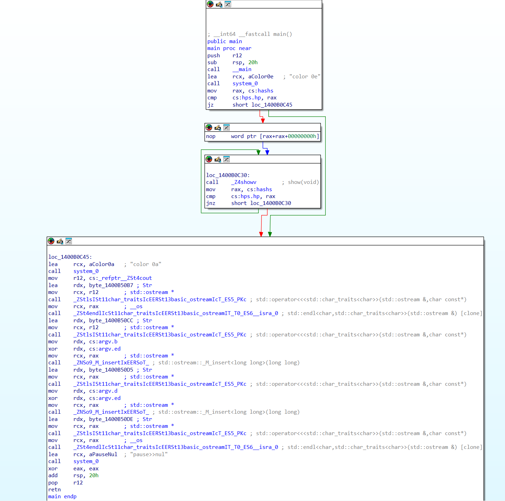
; __int64 __fastcall main()
public main
main proc near
push r12
sub rsp, 20h
call __main
lea rcx, aColor0e ; "color 0e"
call system_0
mov rax, cs:hashs
cmp cs:hps.hp, rax
jz short loc_1400B0C45
loc_1400B0C30:
call _Z4showv ; show(void)
mov rax, cs:hashs
cmp cs:hps.hp, rax
jnz short loc_1400B0C30
loc_1400B0C45:
lea rcx, aColor0a ; "color 0a"
call system_0
mov r12, cs:_refptr__ZSt4cout
lea rdx, byte_1400B50B7 ; Str
mov rcx, r12 ; std::ostream *
call _ZStlsISt11char_traitsIcEERSt13basic_ostreamIcT_ES5_PKc ; std::operator<<<std::char_traits<char>>(std::ostream &,char const*)
mov rcx, rax ; __os
call _ZSt4endlIcSt11char_traitsIcEERSt13basic_ostreamIT_T0_ES6__isra_0 ; std::endl<char,std::char_traits<char>>(std::ostream &) [clone]
lea rdx, byte_1400B50CC ; Str
mov rcx, r12 ; std::ostream *
call _ZStlsISt11char_traitsIcEERSt13basic_ostreamIcT_ES5_PKc ; std::operator<<<std::char_traits<char>>(std::ostream &,char const*)
mov rdx, cs:argv.b
xor rdx, cs:argv.ed
mov rcx, rax ; std::ostream *
call _ZNSo9_M_insertIxEERSoT_ ; std::ostream::_M_insert<long long>(long long)
lea rdx, byte_1400B50D5 ; Str
mov rcx, rax ; std::ostream *
call _ZStlsISt11char_traitsIcEERSt13basic_ostreamIcT_ES5_PKc ; std::operator<<<std::char_traits<char>>(std::ostream &,char const*)
mov rdx, cs:argv.d
xor rdx, cs:argv.ed
mov rcx, rax ; std::ostream *
call _ZNSo9_M_insertIxEERSoT_ ; std::ostream::_M_insert<long long>(long long)
lea rdx, byte_1400B50DE ; Str
mov rcx, rax ; std::ostream *
call _ZStlsISt11char_traitsIcEERSt13basic_ostreamIcT_ES5_PKc ; std::operator<<<std::char_traits<char>>(std::ostream &,char const*)
mov rcx, rax ; __os
call _ZSt4endlIcSt11char_traitsIcEERSt13basic_ostreamIT_T0_ES6__isra_0 ; std::endl<char,std::char_traits<char>>(std::ostream &) [clone]
lea rcx, aPauseNul ; "pause>>nul"
call system_0
xor eax, eax
add rsp, 20h
pop r12
retn
main endp
main()解读。
我们把重点放在这里：
根据汇编我们可以得知这一部分调用show()是进行了call _Z4showv ; show(void)，也就是说这里默认会进入loc_1400B0C30。
那什么情况下会进入loc_1400B0C30呢？
mov rax, cs:hashs ;将hashs变量的数值存入rax
cmp cs:hps.hp, rax ;将rax和hp变量比较(作差)
jnz short loc_1400B0C30 ;如果比较之后差值不为0则跳转到loc_1400B0C30
显然，正常情况下只有血量的存储值等于hashs的时候jnz才会不成立，从而继续向下执行。
为什么这里是和hashs比较，而不是和0进行比较？
还记得前面attack相关的逻辑吗？
这里可以分解为3个语句： 根据异或(^)性质，对于任何数 \(x,a\) ，一定存在 \(x\^a\^a=x\) 恒成立，且 \(0\^x=x\) 。 所以这里hps.hp显然是经历过一次异或的，也就是： 而我们原来想要的比较逻辑应该是“如果hp变为0，则显示我们想要的信息”。对应的异或表达式就是“如果存储的hp和hashs相等，则显示我们想要的信息”。
那么，如果我们将这里的jnz改成jz，是不是就可以实现直捣黄龙了？
说干就干，首先我们点击我们想要修改的jnz short loc_1400B0C30那一行：
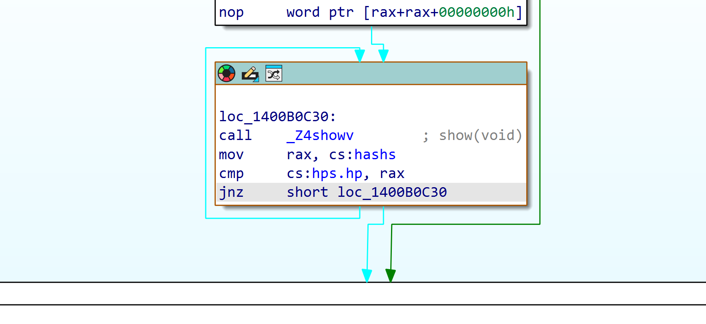
之后我们选择Edit -> Patch Program -> Assemble，就可以看到以下窗口：
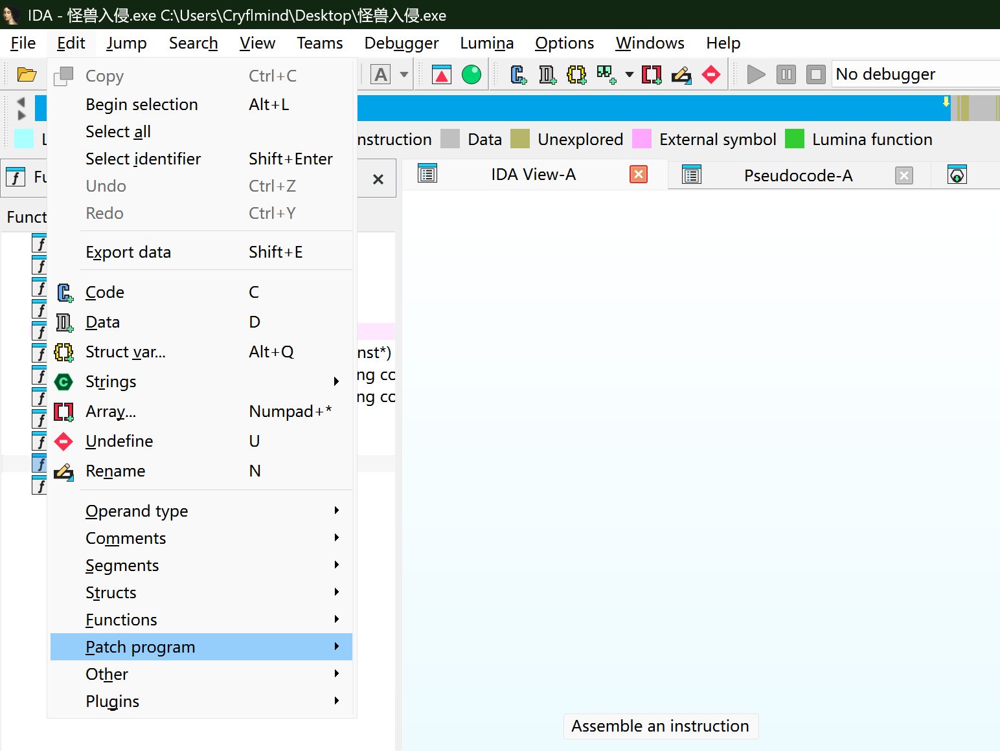
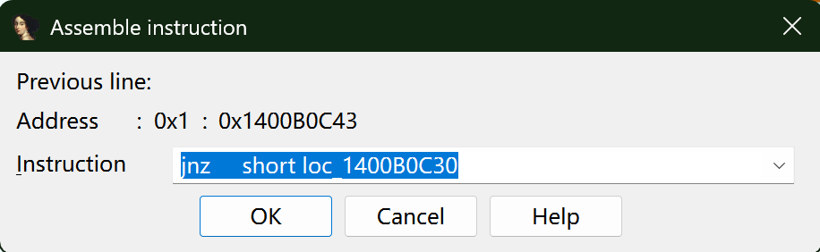
下面我们把其改为jz short loc_1400B0C30并按下OK，然后……他怎么又弹出来一个新窗口？
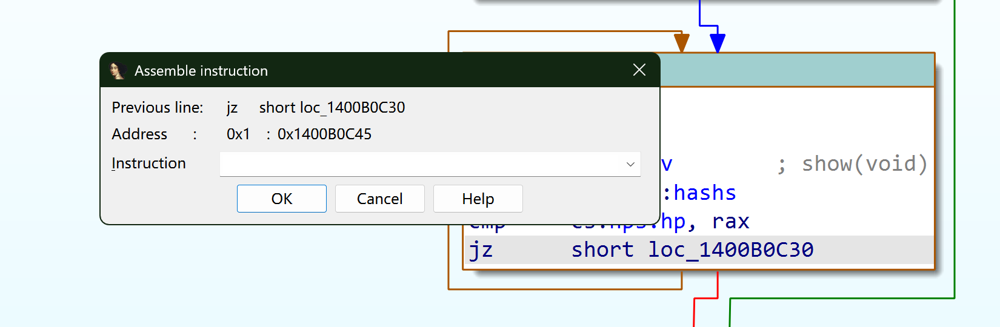
可以看到这里后面的汇编框里修改已经生效了，但是为什么会有一个新的窗口出现？
这里有一个细节：有时候我们会有修改为其他类型汇编语句的需求（比如将jnz修改为nop），但是修改之后我们会发现后面的代码丢失了。
如果出现这种情况那大概率是出现了 代码移位 ，即你新替换的指令和原指令所占的字节数不同，导致整个指令流都出现了偏移，进而导致解析出错（在IDA里面会爆红提示错误）。
解决方法有很多，最常见的就是多补几个nop，而新窗口的出现就是为了方便我们实现这项操作的：他会直接问你需不需要修改下一个字节的指令。
因为这里我们是直接把jnz修改成jz，两者所占的字节数相同，并不需要补字节操作，所以这里我们直接Cancel就好。
思考题：还有其他可用的修改方式吗？
还记得我们前面那几段汇编语句吗，除了修改jz和jnz之外，我们还可以修改jnz的参数（就是前面那个loc_1400B0C30）。
只要把这里修改成最终击败怪兽之后的地址（在这里是loc_1400B0C45，也就是刚结束while循环的那个逻辑框），我们就可以通过一次attack直接实现跳转。
所以还有一种修改方式是jnz short loc_1400B0C45。
本题的修改方式有很多哦，可以多思考多探索一下，熟悉熟悉Patch操作~
还没完，这里我们只是刚刚修改好我们想要的语句，现在我们需要保存。
保存Patch后程序的选项其实也在我们刚才那个菜单：Edit -> Patch Program -> Apply patches to input file...：
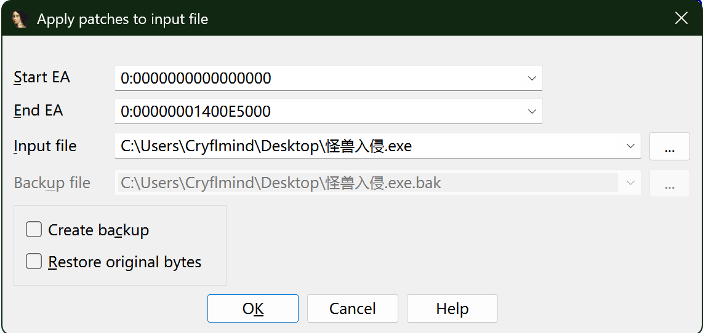
这里的Create backup是创建一个备份文件，Restore original bytes是还原所有更改（防止patch错误但是不小心覆盖掉了源文件）。
（顺带一提，如果你需要查看修改过的地方，可以按下Ctrl + Alt + P）
点击OK保存即可（记得关掉之前打开的可执行程序哦，不然会Permission Denied）。
最后，运行我们Patch完成的程序，输入一次attack之后回车两次：
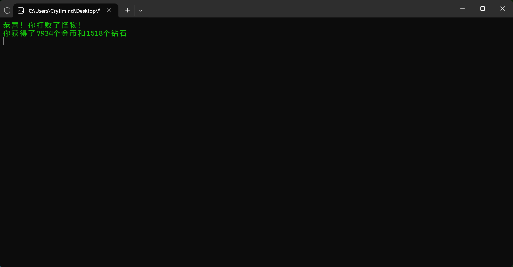
成功啦~
话说，这题还有什么其他的解法喵？
本题的另一种解法是使用Cheat Engine动态调试，也就是通过追踪变化的HP，定位到HP的存储地址并将其篡改成我们想要的数值。
如果你想要尝试这种方法的话，你可能需要知道hashs的值，只需要在反汇编的代码里面双击hashs就会自动跳转啦~